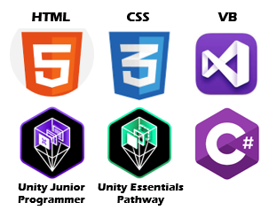

About Me
Hi I'm Tyler. I am a student pursuing a Bachelor's of Science in Information Technology at Kent State and I will be graduating at the end of 2023. I enjoy all aspects of technology, but I have a particular interest in software development. I live in Kirtland, Ohio and my down-time is usually spent hiking, woodworking, and playing board games.
Skills
Portfolio
Current Project: Pixel RPG
Assets: Mystic Woods by Game Endeavor
Ongoing project I started after completing the Unity Junior Programmer pathway. First time working in Unity 2D. Having a lot of fun working with animations, casting for collisions, and vector math for the enemy AI. Next steps include adding UI, session persistance, skeleton death animations, knockback animations, second enemy type, and a spawn manager. Soon, I will start a much larger but similar game using my own assets.
Beach Bombs Minigame
Assets: Unity Create With Code Asset Pack
Small game I made while going through Unity tutorials. First time really experimenting with particle effects, audioclips, and UI.
Rolling Ball Minigame
Assets: Unity Create With Code Asset Pack
Prototype I made during Unity tutorials. Playing around with physics and difficulty progression.